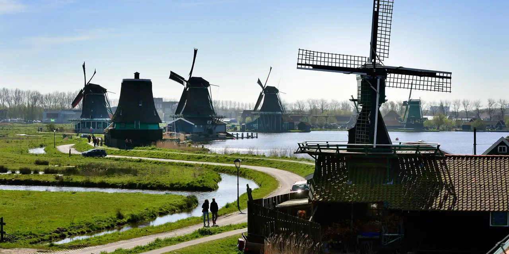
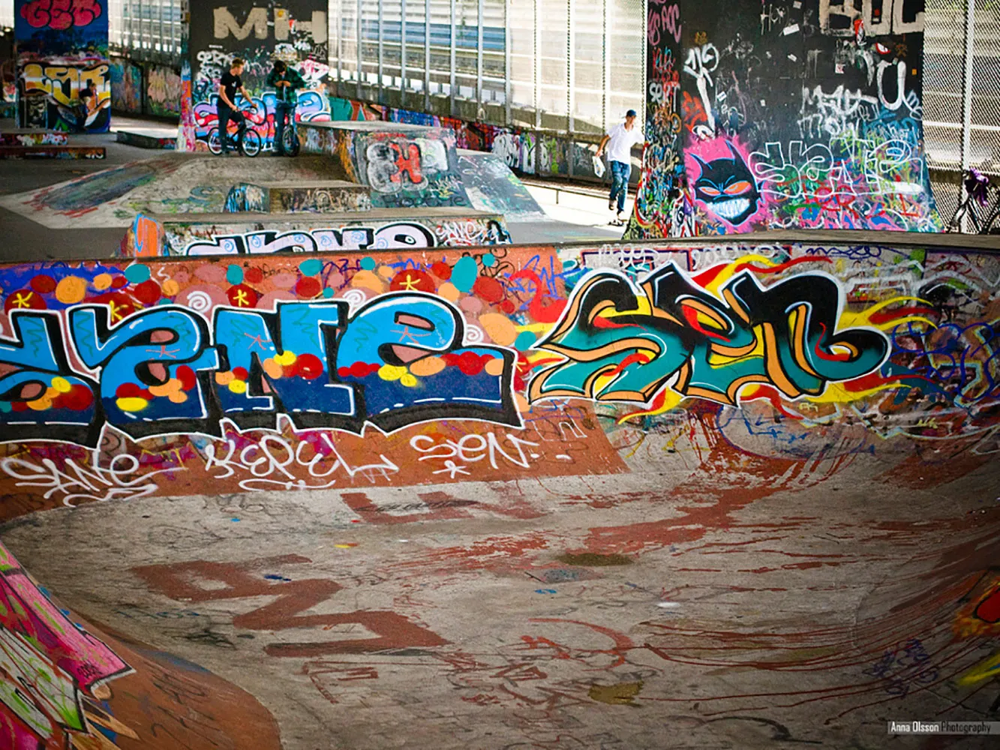

De Zaanse Schans is een in 1963 opgerichte historische Zaanse buurt in de gemeente Zaanstad met daarheen
verplaatste rijksmonumentale houten gebouwen en industriemolens uit de Zaanstreek.
In de loop der tijd is het aangevuld met diverse cultuurhistorische musea, ambachtswinkels en horeca.
Het ligt in de Kalverpolder, een beschermd veenweidelandschap aan de Zaan, tegenover het dorp Zaandijk.
Dit architectonische reservaat voor Zaanse houtbouw is vanwege de architectuurhistorische en landschappelijke waarde een beschermd dorpsgezicht.
Het ontwikkelde zich tot internationale toeristische bestemming met jaarlijks enkele miljoenen bezoekers:
in 2016 waren er 1,8 miljoen, in 2017 2,2 miljoen.
BRON: Wikipedia Bron

Are you looking for an awesome skatepark to go skateboarding, inline skating or BMX-biking that is close to Amsterdam?
We’ve got the perfect spot for you. Just outside of Amsterdam, in Zaandijk, there is a covered skatepark in a graffiti-allowed zone.
That’s right, that means that not only can you go skate with your friends free of cost, but you take some cans to spray-paint your tags on the walls too.
As you might have guessed, this concrete park is absolutely covered in graffiti, making it an ideal place to get that old-school feel that you need and love in your shots.
Without a doubt, the unique thing about this park is that it has been built underneath highway A8
in Koog aan de Zaan; hence, the name, Skatepark A8.
The overpass covers the whole length of the park, making it possible to ride on both sunny and rainy days.
There is plenty of natural light during the days, and the park’s lights come on at night so that you can skate worry-free at any time.
BRON: Skatepark A8